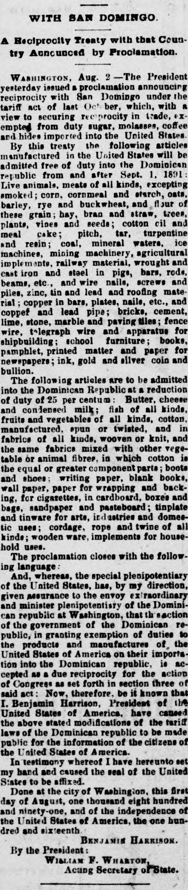
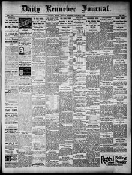

The following articles are to be admitted into the Dominican RepublicLos artículos siguientes serán admitidos en la República Dominicana
Daily Kennebec Journal. Augusta, Me., August 3, 1891. Page 1. Published by Sprague, Owen & Nash. A daily newspaper, 1870–1975.Daily Kennebec Journal. Augusta, Me., 3 de agosto de 1891. Página 1. Publicado por Sprague, Owen & Nash. Periódico diario, 1870–1975. View the originalVer el original


See the full pageVer la página completaThe Daily Kennebec Journal published President Benjamin Harrison's proclamation making public the reciprocity agreement concluded with the Dominican Republic. The pact reduced Dominican import duties by 25 percent on numerous American goods, such as provisions, cotton textiles, shoes, and paper. President Harrison declared these concessions sufficient reciprocity under Section 3 of the tariff act to grant reciprocal privileges to Dominican commodities.El Daily Kennebec Journal publicó la proclama del presidente Benjamin Harrison mediante la cual hacía público el acuerdo de reciprocidad concluido con la República Dominicana. El pacto reducía los aranceles de importación dominicanos en un 25 por ciento sobre numerosos productos estadounidenses, tales como provisiones, textiles de algodón, calzado y papel. El presidente Harrison declaró estas concesiones como reciprocidad suficiente bajo la Sección 3 de la ley de aranceles para conceder privilegios recíprocos a los productos básicos dominicanos.
FULL TEXT:TEXTO COMPLETO:
Daily Kennebec Journal August 3, 18913 de agosto de 1891
WITH SAN DOMINGO.CON SANTO DOMINGO.
A Reciprocity Treaty with that Country Announced by Proclamation.Un tratado de reciprocidad con ese país anunciado por proclama.
WASHINGTON, Aug. 2.—The President yesterday issued a proclamation announcing reciprocity with San Domingo under the tariff act of last October, which, with a view to securing reciprocity in trade, exempted from duty sugar, molasses, coffee and hides imported into the United States.WASHINGTON, 2 de agosto.—El Presidente ayer emitió una proclama anunciando reciprocidad con Santo Domingo bajo la ley arancelaria del pasado octubre, que, con miras a asegurar reciprocidad en el comercio, eximió de derechos azúcar, melaza, café y cueros importados a los Estados Unidos.
By this treaty the following articles manufactured in the United States will be admitted free of duty into the Dominican republic from and after Sept. 1, 1891: Live animals, meats of all kinds, excepting smoked; corn, cornmeal and starch, oats, barley, rye and buckwheat, and flour of these grain; hay, bran and straw, trees, plants, vines and seeds; cotton oil and meal cake; pitch, tar, turpentine and resin; coal, mineral waters, ice machines, mining machinery, agricultural implements, railway material, wrought and cast iron and steel in pigs, bars, rods, beams, etc., and wire nails, screws and piles, zinc, tin and lead and roofing material; copper in bars, plates, nails, etc., and copper and lead pipe; bricks, cement, lime, stone, marble and paving tiles; fence wire, telegraph wire and apparatus for shipbuilding; school furniture; books, pamphlet, printed matter and paper for newspapers; ink, gold and silver coin and bullion.Por este tratado los siguientes artículos manufacturados en los Estados Unidos serán admitidos libres de derechos en la república dominicana desde y después del 1 de septiembre de 1891: Animales vivos, carnes de toda clase, exceptuando ahumadas; maíz, harina de maíz y almidón, avena, cebada, centeno y trigo sarraceno, y harina de estos granos; heno, salvado y paja, árboles, plantas, vides y semillas; aceite de algodón y torta de harina; brea, alquitrán, trementina y resina; carbón, aguas minerales, máquinas de hielo, maquinaria minera, implementos agrícolas, material ferroviario, hierro y acero forjado y fundido en lingotes, barras, varillas, vigas, etc., y clavos de alambre, tornillos y pilotes, zinc, estaño y plomo y material para techos; cobre en barras, planchas, clavos, etc., y tubos de cobre y plomo; ladrillos, cemento, cal, piedra, mármol y losetas para pavimentar; alambre para cercas, alambre telegráfico y aparatos para construcción naval; mobiliario escolar; libros, folletos, material impreso y papel para periódicos; tinta, moneda de oro y plata y lingotes.
The following articles are to be admitted into the Dominican Republic at a reduction of duty of 25 per centum: Butter, cheese and condensed milk; fish of all kinds, fruits and vegetables of all kinds, cotton, manufactured, spun or twisted, and in fabrics of all kinds, woven or knit, and the same fabrics mixed with other vegetable or animal fibres, in which cotton is the equal or greater component parts; boots and shoes; writing paper, blank books, wall paper, paper for wrapping and packing, for cigarettes, in cardboard boxes and bags, sandpaper and pasteboard; tinplate and tinware for arts, industries and domestic uses; cordage, rope and twine of all kinds; wooden ware, implements for household uses.Los siguientes artículos han de ser admitidos en la República Dominicana a una reducción de derechos del 25 por ciento: Mantequilla, queso y leche condensada; pescado de toda clase, frutas y vegetales de toda clase, algodón, manufacturado, hilado o retorcido, y en tejidos de toda clase, tejidos o de punto, y los mismos tejidos mezclados con otras fibras vegetales o animales, en los que el algodón es el componente igual o mayor; botas y zapatos; papel de escribir, libros en blanco, papel tapiz, papel para envolver y empacar, para cigarrillos, en cajas de cartón y bolsas, papel de lija y cartón; hojalata y artículos de estaño para artes, industrias y usos domésticos; cordaje, soga y cordel de toda clase; artículos de madera, implementos para usos domésticos.
The proclamation closes with the following language:La proclama cierra con el siguiente lenguaje:
"And, whereas, the special plenipotentiary of the United States, has, by my direction, given assurance to the envoy extraordinary and minister plenipotentiary of the Dominican republic at Washington, that the action of the government of the Dominican republic, in granting exemption of duties to the products and manufactures of the United States of America on their importation into the Dominican republic, is accepted as a due reciprocity for the action of Congress as set forth in section three of said act: Now, therefore, be it known that I, Benjamin Harrison, President of the United States of America, have caused the above stated modifications of the tariff laws of the Dominican republic to be made public for the information of the citizens of the United States of America.«Y, por cuanto, el plenipotenciario especial de los Estados Unidos, ha, por mi dirección, dado aseguramiento al enviado extraordinario y ministro plenipotenciario de la república dominicana en Washington, de que la acción del gobierno de la república dominicana, al otorgar exención de derechos a los productos y manufacturas de los Estados Unidos de América a su importación a la república dominicana, es aceptada como una debida reciprocidad por la acción del Congreso según se expone en la sección tres de dicha ley: Por tanto, se hace saber que yo, Benjamin Harrison, Presidente de los Estados Unidos de América, he causado que las modificaciones antes declaradas de las leyes arancelarias de la república dominicana sean hechas públicas para información de los ciudadanos de los Estados Unidos de América.
"In testimony whereof I have hereunto set my hand and caused the seal of the United States to be affixed.«En testimonio de lo cual he puesto mi mano y causado que el sello de los Estados Unidos sea fijado.
"Done at the city of Washington, this first day of August, one thousand eight hundred and ninety-one, and of the independence of the United States of America, the one hundred and sixteenth.«Hecho en la ciudad de Washington, este primer día de agosto, mil ochocientos noventa y uno, y de la independencia de los Estados Unidos de América, el centésimo décimo sexto.
"BENJAMIN HARRISON.«BENJAMIN HARRISON.
"By the President:«Por el Presidente:
"WILLIAM F. WHARTON,«WILLIAM F. WHARTON,
"Acting Secretary of State."«Secretario de Estado en Funciones.»